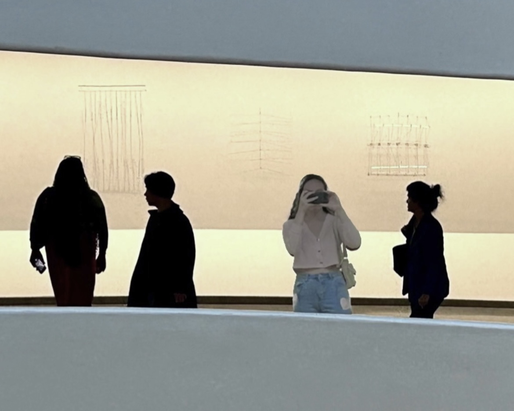

Rachael Prokap's Writing Portfolio
a collection of my favorite writing pieces

a collection of my favorite writing pieces

Below are sample works from business and technical writing courses. I've also included reflections on these works that focus on what I've learned and accomplished through each experience.
I'm currently studying Comparative Literature and Business and Technical Writing at Rutgers University.
In my free time, I enjoy hiking, reading, listening to music, and spending time with my cat and dog (pictured below).
I have a wide range of academic interests, from IT to art history to chemistry, and writing is my favorite skill to practice.
I'm pursuing a career in which I can make the most of my skills and continue to do what I love.
I’m interested in research because of the opportunity to put my strengths toward improving the world around me.
You can read samples of my technical writing
here. and my academic writing
here.
Creative writing is important to me as a form of art and expression.
I'm interested in capturing the experience of the world through someone else's eyes.
Some topics I write about are family dynamics, home, and coming of age.
Click
here
to read a few of my short stories.
A dream of mine is to one day publish a novel.
You can read the first five pages of a manuscript I wrote
here.
I am also an avid reader, and some of my favorite works are Dream Work by Mary Oliver, Pedro Páramo by Juan Rolfo, and Crying in H-Mart by Michelle Zauner.
I wanted my portfolio to be as personal as possible, so all the photos you see on this website are pictures I took.
You can learn more about the stories behind some of the photos
here.
I'm always looking for opportunities to learn more and put my skills into practice. Connect with me at rachaelprokap@gmail.com.
Below is a collection of my creative writing and reflections on select pieces.

"The Frog-Pond" Reflection
Here is a collection of some of the academic papers I've written for literature, philosophy, and cultural courses.
All of the photos in this portfolio are pictures I have taken myself, and they each represent a story from my life.
Photography in itself isn’t a dedicated hobby of mine; I took most of these photos spontaneously on my phone camera.
However, every image in my thorough camera roll contains memories and snapshots of things that are important to me.
If you scrolled through my camera roll, you would see a lot–and I mean a lot–of pictures of my cat, dog, family, and friends.
There are also quite a few poorly framed pictures of flowers growing in sidewalk cracks and animals crossing roads, as well as an entire gallery’s worth of sunsets–from perfectly captured mountainscapes to oversaturated blurs of light.
What each of these photos reminds me of, the memories contained and evoked, and the significance of the subjects, is different between myself and every witness, and this lens of understanding is the same perspective I apply to my creative writing.
The importance of writing, to me, is to invoke the most complex and uncertain of moments, emotions, and experiences in a way that allows others to consider otherwise inexplicable moments.
These photos likewise capture a moment and enact a form of communication that language cannot.
Through each image, and especially in comparison to one another, a lot of what is important to me hopefully shows through.
Just as each piece of writing has a photo thumbnail standing in place of its text until clicked, this page about my photography describes my photos in a snapshot of writing.
Click
here
for a flash fiction piece I wrote in an introductory creative writing course I took freshman year. We were given a few minutes and prompted to write what came to mind about a photo in front of us. I explored the timelessness of photography, which is the most interesting aspect of my photos to me; each picture represents a still memory.